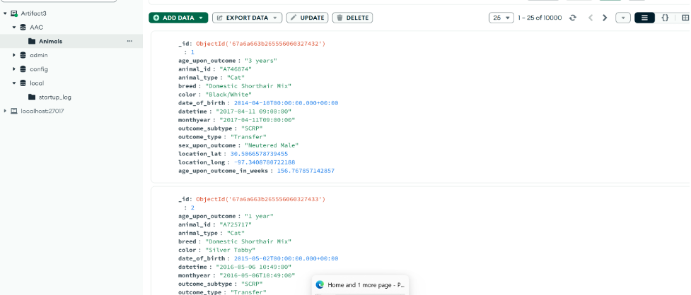
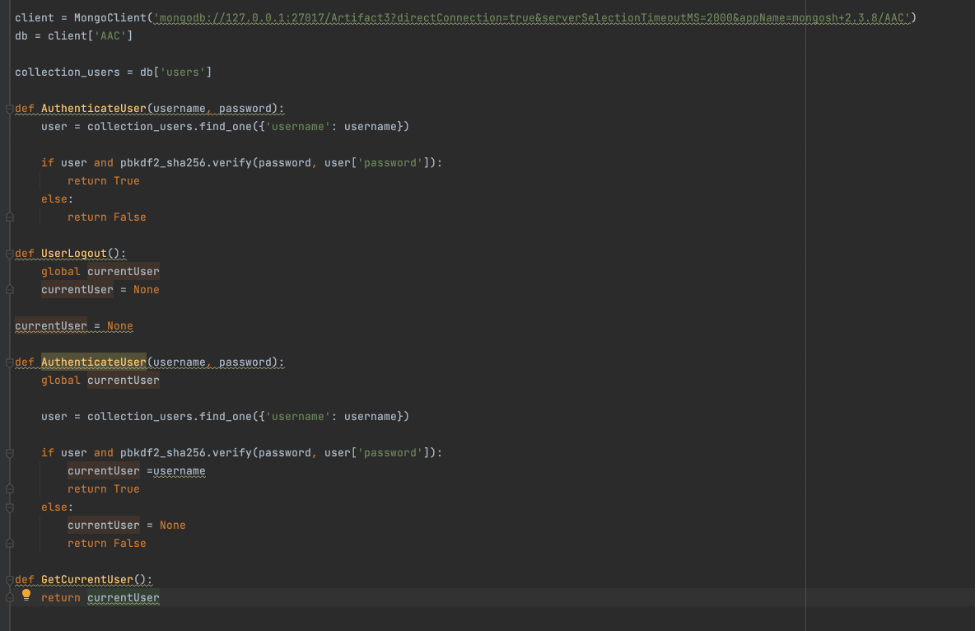
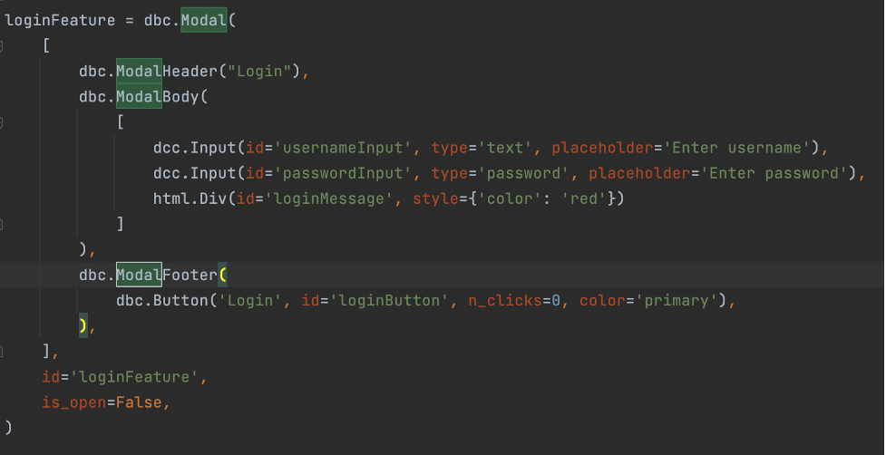
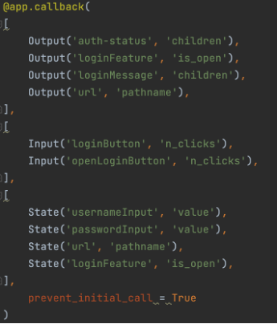
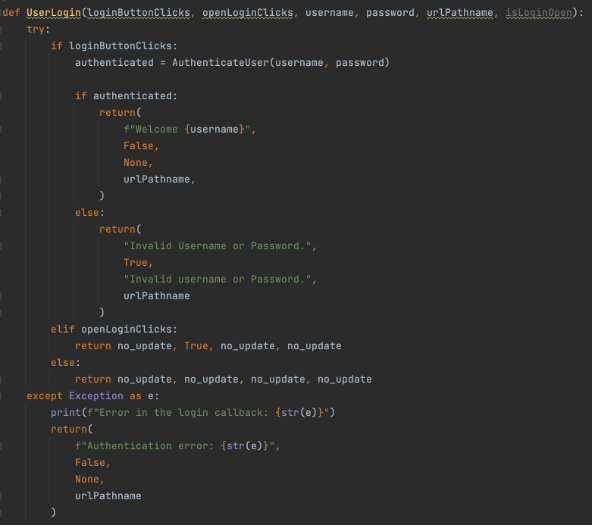

This narrative focuses around the third artifact. This artifact was the AAC dashboard program that was created for the CS 340 class taken during the September-October term of 2024. This assignment was to create a working dashboard, using python, that would connect to a MongoDB database that contained information on animals living at the Austin Animal Center. These animals were broken into different types of rescues and could be sorted through with radio buttons.
The reason that I have chosen to include this in my ePortfolio is that it is an actual, searchable, database that contained web-based interaction. This interaction allowed for querying the database with a specific user that has access. It also allowed for showing that I can work with increasing the security and searchability of the code through the setup.
When it comes to meeting the outcomes that I initially created, I can say that my original outcomes did not happen. This is due to taking a deeper into what I was doing. This led me to an update that I noticed during the code review that I felt was more important. My original plan was to get the database to run a bit faster when querying and fixing the geolocation code. When I did the code review, I looked at it and saw that, during the original assignment, we had to hard code the username and password into this. It was after this that I got to thinking and looking more deeply into my database. This led me to updating my objectives to be focusing on authenticating users and passwords.
Of course, before I could do any of this, I had to get my system working with the current format that I had. This turned out to be more difficult than I had expected. A part of this was because I did not have access to the original virtual environment. I had to create my own environment. This meant spending time to install and download all of the various packages and programs that were needed. This took me about around a week to get working and be able to display what I had seen in my class.
Once I got there, I did have an issue where it wouldn’t display the data. This ended up being due to me having to learn how to work MongoCompass. Once I was able to get it set up properly, everything looked like this on its side:

Once I was able to get that working and the dashboard was back to what it had been before, I began the process of creating an authentication. At first, I tried to do this all through Jupyter Notebook, but I found that, outside of using it to at least get me back to being able to see the system, it wasn’t going to work. I had to stop and think for a bit. This led me to talking to a few people I know that are in the database field. After some explanations on a few different features, and a couple of rants from one of the database programmers I know on python, I realized that it would be best to convert the Jupyter Notebook script into standard Python.
Since I wasn’t using Jupyter Notebook, I was able to use Pycharm as my environment. It was one I had used in the past and knew how to work. I created a new project, I imported my updated CRUD file, and created a new Python file called dashboard. From there, since I do have Visual Studio Code, I was able to copy the code from the Jupyter Notebook file and paste it into the new dashboard file.
Since I had never made a system for authenticating users before, I had to do some research into how this was done. I looked at examples I found online, talked to people that I know, and pieced together what made sense to me. It was from there that I created a python file that was meant for authenticating users. This took me a little time as I had to do a lot of looking up and asking of questions because it required knowledge I didn’t have. The first component was the client. I already had this in my CRUD file. This meant I was able to copy and paste that. From there, I had to get the system to verify users. Since I had been doing research and reading up on things, I was able to put together a few different elements. One of those was that I would have to create multiple methods that would authenticate the user, get that user, and log them out. This did take a little bit of time, but constant questions did help me create a code that had no compiling issues. This is that code:

It’s when I got to the dashboard components that I had to do a bit more work. This was because I wasn’t making a Jupyter Notebook set up that had everything. I was having to figure out what was being done where. In all of the examples I had found, I realized I needed to create a login set up. This would be important in ensuring authentication. It took me a few tries. It didn’t help that the system I was using didn’t like working with the extensions at times. I had to do a lot of code checking on websites and asking those I know to see if what I was doing would work. The biggest problem was that I didn’t have the time to fully work through it that way, but I could use third party code checkers that would do the job for me. These allowed me to test that my code did work. The final code on the login module was this:

All of this boiled down to ensuring that I could create a form that would allow users to put in their username and password. This, of course, just created the HTML components and wouldn’t work without setting it up in a way that actually calls to it. This led me to having to create an @callback. This had been done previously with the other version, but that was for pie charts and the geolocation component. Using those as my examples, I started breaking down everything into the parts I would need. For one thing, I knew I would need a method that would call to the login, which would register button presses, usernames, the path, and so on. That meant that I first had to set my output, input, and the states. That was all in the callback. Once I was certain that it was right, I moved onto creating the basic method. Once again, I had to use third party software that could check for errors and whether it would actually work, not my favorite way to do it, but it did what I needed it to. This is what these looked like:


In the end, what I learned was that sometimes the most obvious answer isn’t the answer. In this case, it was learning that a small database, like what was being done here, doesn’t necessarily need a focus on making querying faster. Yes, that can seem important, but what is more important was what I noticed during my code review. It was the security. The other thing I noticed was that I likely didn’t need to spend a week working on trying to get the system to display information like it did when I was in my class. Since I had moved to a security route, it wasn’t necessarily important that it display the information. It was more important that I could get a login feature working that would authenticate a user. It came down to me looking more in depth at what was there and I learned how to do that and set it up along the way.